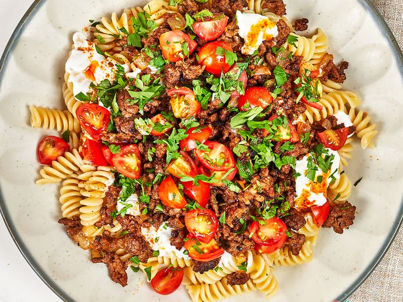

Turkish Pasta

This Turkish pasta recipe features a sweet paprika yogurt sauce, ground round, and fusilli pasta.
Ingredients
- Greek Yogurt: 2 cups
- Garlic Cloves: 3
- Kosher Salt: 2 teaspoons
- Butter: 5 tablespoons
- Sweet Paprika: 2 teaspoons
- Fusilli Pasta: 1 pound
- Ground Round: 1 1/4 pounds
- Onion: 1 cup chopped
- Curry Powder: 1/4 teaspoon
- Onion Powder: 2 teaspoons
- Fresh Ground Black Pepper: 1/2 teaspoon
- Grape Tomatoes: 1 pint, quartered
- Flat Leaf Parsley: 1 bunch
Directions
- Step 1: Stir together yogurt, garlic and 1/2 teaspoon salt in a bowl until well blended and set aside. Melt butter in a small skillet or saucepan and stir in 1/2 teaspoon paprika and salt to taste. Keep warm.
- Step 2: Bring a large pot of salted water to a boil. Add pasta and cook until al dente, about 9 minutes; drain.
- Step 3: Meanwhile, heat a large skillet over medium-high heat. Add ground beef and cook, breaking up meat with a spatula, until beginning to brown. Add onion, remaining paprika, curry powder, onion powder, remaining salt, and pepper and cook until browned, crumbly, and slightly crispy.
- Step 4: Divide pasta among serving plates and top evenly with yogurt mixture. Top with ground beef mixture and drizzle evenly with butter mixture. Sprinkle the top with tomatoes and parsley.